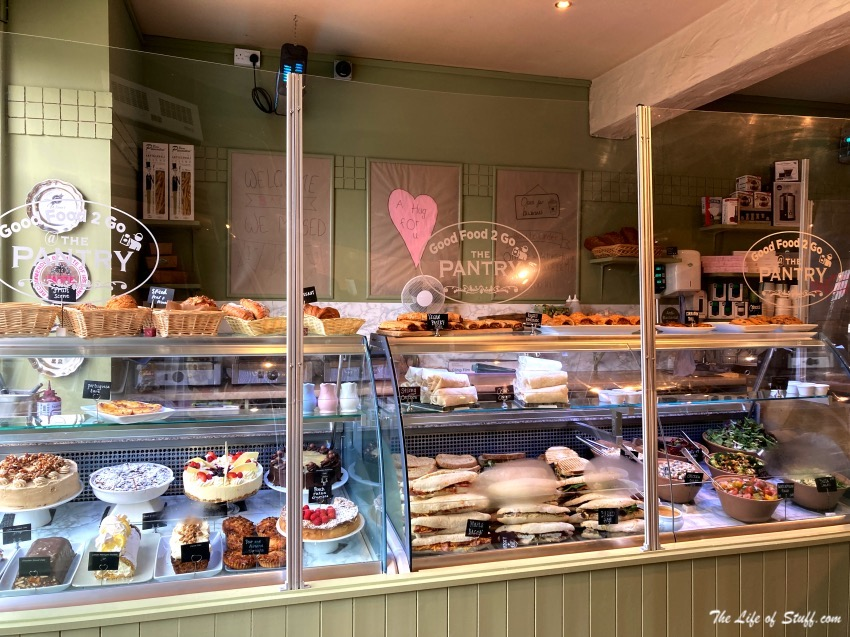

It all started one sunny day, in the small kitchen of my grandmother's apartment, which was located on a not so busy streeт. Sun, an old diary with recipes, a lot of desire and a lot of love. We came to the idea that the world should try our homemade cookies and cakes, but a not so long after that the muffins arrived and then the pastry. Now, we have this, something i would never expected to happen. Enjoy our specialties and have fun trying the new flavours.
